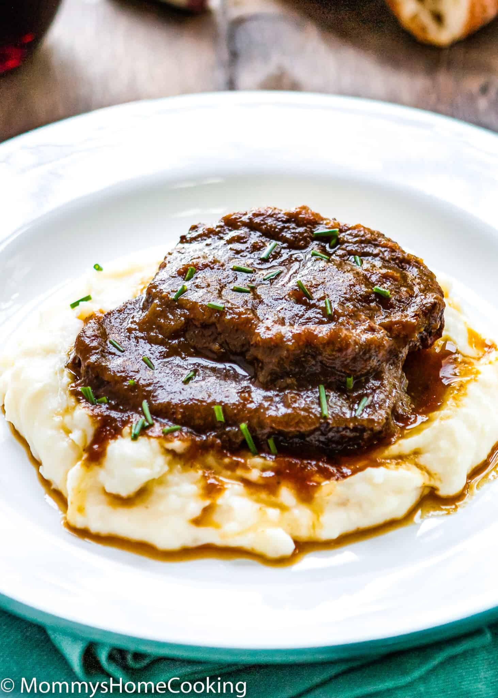

Asado Negro

Description
This Venezuelan Asado Negro is tender, flavorful, and perfect every time!
The Round Roast is cooked in a flavorful wine broth until the beef is meltingly tender and divine.
Asado Negro is one of the most traditional dishes in Venezuela. It’s an eye-round roast slow cooked
in a slightly sweet and super flavorful dark sauce. Each Venezuelan family has their own version.
But today, you can forget all other Asado Negro recipes… this one is to die for! Usually, this dish
is served with white rice and fried plantains, but this time I served it with mashed potatoes.
Ingredients
- 3 – 4 lb Eye of Round Roast
- Salt and pepper to taste
- 6 cloves garlic, minced
- 1/3 cup (80 ml) Worcestershire sauce
- 1/3 cup (80 ml) vegetable oil (Other neutral taste oil such canola or corn, will work fine)
- 2 tablespoons granulated sugar
- 1 medium onion, roughly diced
- 1 cup (130 g) baby carrots
- 1 medium green bell pepper, stemmed, seeded and roughly diced
- 1 fresh oregano sprig (if fresh is not available, you can use 1/2 teaspoon of dried oregano)
- 2 dried bay leaves
- 1 cup (240 ml) beef stock
- 1 beef bouillons cube
- 1 cup (240 ml) red wine (full bodied eg. cabernet sauvignon or merlot)
- 1 cup (240 ml) Marsala wine
- 1/4 cup papelon/panela/piloncillo, grated (brown sugar cane)
Steps to Make It
- Prepare the Beef: Cut off any large, fatty membrane.
- Marinade: Place the beef in a resealable bag and add salt and pepper to taste,
garlic, and Worcestershire sauce. Seal and squish around to combine. Place in
the refrigerator to marinate for at least 1 hour and up to overnight (preferred).
- When ready to cook remove meat from marinade. Discard marinade.
- Brown the Roast: Heat the oil in a large heavy-based pan over high heat. When the oil starts to heat,
add the sugar to the center of the pan and let it dissolve without stirring. Place the
beef roast in the pan and sear it on each side until nicely browned. Transfer the beef
to the slow cooker.
- Slow Cook: Transfer the browned beef to the slow cooker. Add onions, carrots, green pepper, oregano,
bay leaves, beef stock, beef bouillon, and wines to the slow cooker. Cover and cook on High for 4
hours or Low for 8 hours.
- When ready, open the slow cooker and transfer the beef to a cutting board. Let the meat rest for 5 -10 min,
and then slice into 1/2-inch thick slices. Set aside.
- Reduce the Sauce: Fish out the oregano sprig and bay leaves from the cooking liquids. Transfer the liquid and
veggies to the blender and puree into a smooth sauce – it will change from a dark brown to a lighter brown color.
- Pour the sauce into a saucepan and bring to a simmer over medium heat. Add the grated papelon (brown sugar cane),
mix well and simmer until the sauce turns a darker brown color and reduces by to a gravy consistency, about 8 – 10 minutes.
Taste and adjust the seasoning (salt and pepper) if necessary.
- Add the Meat to the Sauce:
Add the sliced meat to the reduced sauce and simmer for 10 – 15 more minutes. Serve hot with mash potatoes or white rice.